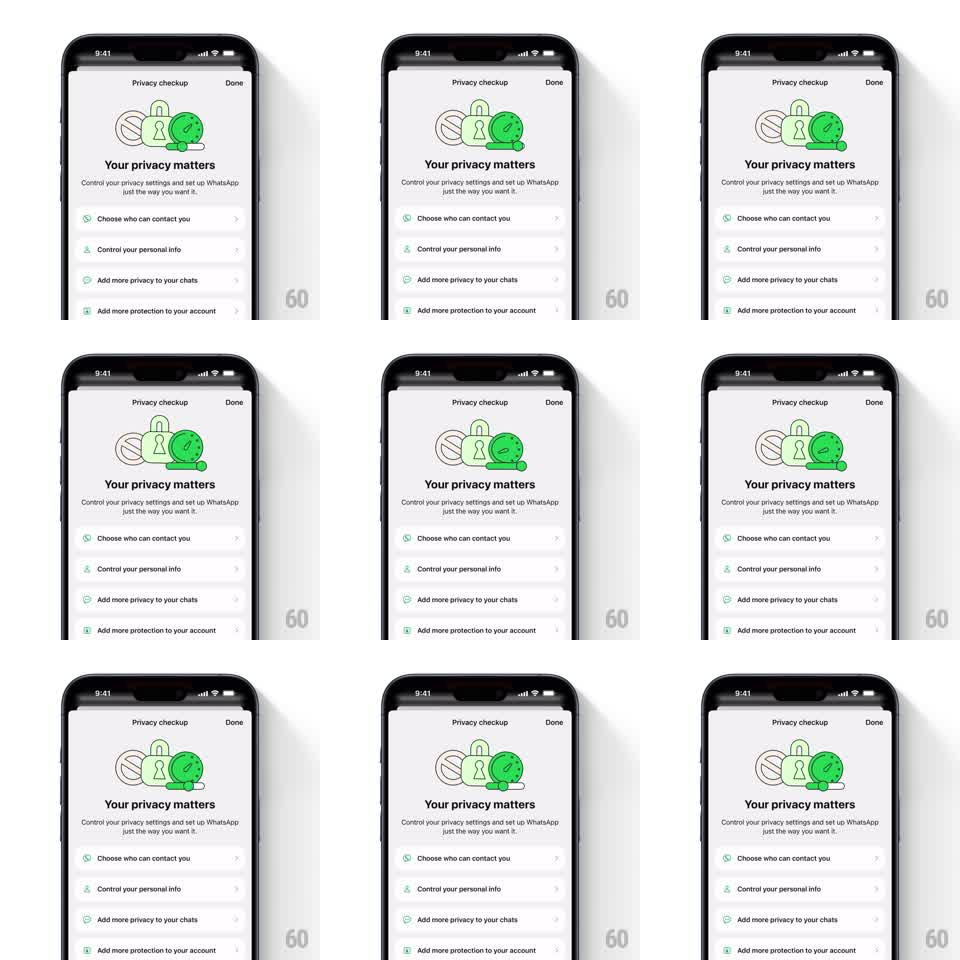

Media
Frame-by-frame

Rebuild this animation 1:1: WhatsApp's privacy checkup illustration - inside the line-art cluster of a lock, a ball, and a clock, the green clock disc does a small wiggle-and-spin on a loop.

Rebuild this animation 1:1: WhatsApp's privacy checkup illustration - inside the line-art cluster of a lock, a ball, and a clock, the green clock disc does a small wiggle-and-spin on a loop. ## Integration Integration: stack-agnostic spec - springs given as stiffness/damping, timed motions as duration + curve; map every value to your framework and animation library of choice. ## Scene Light settings screen: "Privacy checkup" nav bar, the illustration, "Your privacy matters" headline and copy, and a list of privacy option rows. Only the illustration animates. ## Motion spec Pattern: idle accent loop, ~4s. - The clock disc (the one filled green element) wiggles: rotates +-8deg twice (300ms each, ease-in-out), like a gentle head shake. - On the third beat it does a full 360deg spin (500ms, ease-in-out) while its hands sweep around with it. - Then it rests for ~2s before the loop repeats; the lock and ball line art stay perfectly still. ## Calibration - The motion lives in one element only - animating the whole cluster turns a wink into a screensaver. - Rest phase is at least twice the motion phase; the charm is restraint. ## Reduced motion No loop; the clock sits static. ## Don't miss - The clock's hands stay attached through the spin - rotating the face but not the hands looks broken. - The wiggle pivots at the disc's center, not its bottom edge.